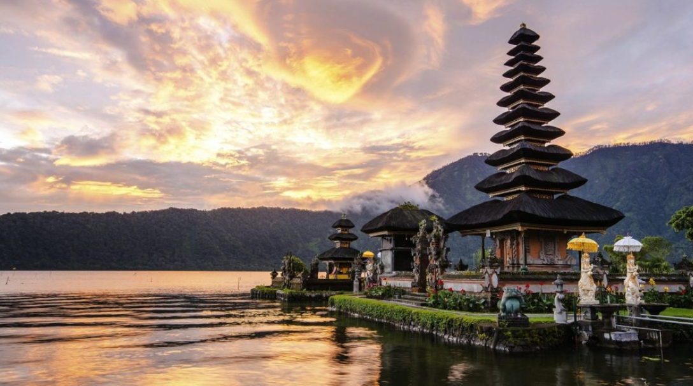

Descubre Nuestros 5 Destinos Populares
1. Bali, Indonesia
¡Prepárate para un emocionante viaje virtual a la hermosa isla de Bali, Indonesia!
Imagina despertar con el sonido de las olas rompiendo suavemente en la costa y sentir la brisa cálida acariciando tu piel. Te encuentras en Bali, una isla paradisíaca conocida por sus playas de arena blanca y aguas cristalinas.
Primera parada: Las Playas Encantadas
Comenzamos nuestro viaje en las playas más emblemáticas. Pisa la suave arena de Kuta y sumérgete en las olas mientras los surfistas dominan las crestas. Después, dirígete a Seminyak para experimentar su ambiente moderno y sofisticado, perfecto para relajarse y disfrutar de la vida nocturna. ¡No olvides admirar la espectacular puesta de sol en la playa de Jimbaran!
Explora la Cultura y la Historia en Templos Sagrados
Nos trasladamos al corazón de la cultura balinesa en Ubud. Aquí, visita los antiguos templos de Tanah Lot y Uluwatu, situados en acantilados con vistas impresionantes al océano. Sumérgete en las tradiciones hindúes de Bali y maravíllate con la arquitectura única de estos santuarios.
Festivales y Celebraciones Únicas
Es momento de experimentar la vibrante cultura local en medio de festivales como Nyepi, donde la isla entera se sumerge en un día de reflexión y paz. Imagina un silencio absoluto y cielos estrellados, una experiencia verdaderamente especial.
Un Banquete para el Paladar: Deléitate con la Gastronomía Balinesa
Saborea la deliciosa gastronomía balinesa. Desde el cerdo asado Babi Guling hasta el aromático Nasi Goreng, la diversidad de sabores te cautivará. No te pierdas la oportunidad de probar frutas tropicales frescas y bebidas refrescantes.
Aventura y Naturaleza en su Máxima Expresión
Sigue la aventura explorando el majestuoso Monte Batur al amanecer, y maravíllate con las impresionantes vistas desde la cima. Desafía tus límites con un emocionante rafting en el río Ayung y descubre las maravillas de la selva tropical en el Parque Nacional de Bali Barat.
Compras en los Mercados Típicos
Descubre la autenticidad de Bali en sus mercados locales. Encuentra recuerdos únicos, artesanías y ropa tradicional en los mercados de Ubud y Sukawati. ¡Un deleite para los amantes de las compras!
Bienestar y Espiritualidad: Un Renacimiento para el Alma
Termina tu viaje sumergiéndote en la espiritualidad de Bali. Participa en sesiones de yoga rejuvenecedoras y recibe tratamientos de spa tradicionales balineses. Encuentra la paz interior en este paraíso de bienestar.
Bali te espera con los brazos abiertos, lista para brindarte una experiencia inolvidable de belleza natural, cultura rica y hospitalidad auténtica! Prepárate para explorar y sumergirte en la magia de esta joya del océano Índico! Para mas informacion,haz un click aqui.
Londres, Inglaterra
Descubre la Magia de Londres, la Ciudad de las Luces
Embárcate en un viaje virtual a Londres, una metrópolis vibrante y llena de historia. Desde majestuosos palacios hasta modernos rascacielos, esta ciudad te sorprenderá en cada esquina.
Explora Monumentos Históricos y Culturales
Comienza tu aventura explorando el icónico Big Ben, el majestuoso Palacio de Buckingham y la emblemática Torre de Londres. Sumérgete en la rica historia de la ciudad y maravíllate con su arquitectura imponente.
Un Paseo por los Jardines y Espacios Verdes
Disfruta de la belleza natural en los exuberantes Jardines de Kensington, Hyde Park y Regent's Park. Relájate junto a lagos serenos, observa la vida silvestre y respira el aire fresco en estos oasis urbanos.
Gastronomía Variada y Deliciosa
Deléitate con la diversa gastronomía de Londres. Prueba el clásico fish and chips en un pub histórico, disfruta de la cocina internacional en Borough Market y saborea deliciosos pasteles en acogedoras cafeterías.
Arte y Cultura en Cada Rincón
Explora la escena artística de Londres visitando la Galería Nacional, el Tate Modern y el Museo Británico, que albergan colecciones impresionantes de arte de todo el mundo. Déjate inspirar por la creatividad de la ciudad.
Descubre los Rincones Más Modernos
Adéntrate en el moderno Londres visitando el London Eye para una vista panorámica asombrosa, o camina por el famoso Puente de la Torre para experimentar la fusión de arquitectura clásica y contemporánea.
Londres te invita a un viaje único, donde la historia se mezcla con la modernidad, la cultura con la gastronomía y la naturaleza con la ciudad. ¡Prepárate para explorar la ciudad de las luces y descubrir sus infinitas maravillas! Para mas informacion,haz un click aqui.
Nueva York, Estados Unidos
Descubre la Energía de Nueva York, la Ciudad que Nunca Duerme
Prepárate para un emocionante viaje virtual a la ciudad que nunca duerme, Nueva York. Conocida por su icónica silueta y su energía inigualable, te sumergirás en la vibrante cultura de esta metrópolis.
Explora los Monumentos más Emblemáticos
Nuestro viaje comienza con una visita al imponente Empire State Building, donde podrás disfrutar de impresionantes vistas panorámicas de la ciudad desde su mirador en el piso 86. Camina por la famosa Quinta Avenida y admira la majestuosidad de la Catedral de San Patricio.
Gastronomía Internacional y Diversa
La gastronomía en Nueva York es tan diversa como su población. Desde la auténtica pizza en Little Italy hasta los bagels tradicionales en el Lower East Side, tendrás la oportunidad de probar sabores de todo el mundo. No te pierdas los tacos en Brooklyn o un hot dog en Times Square.
Arte y Entretenimiento en Cada Esquina
Descubre la riqueza artística de Nueva York en el Museo Metropolitano de Arte, donde encontrarás una colección que abarca 5,000 años de historia. Luego, sumérgete en la emoción de un espectáculo de Broadway en el famoso Theater District, el corazón del teatro mundial.
Explora la Gran Manzana
Pasea por el famoso Central Park, un oasis verde en medio de la ciudad, perfecto para un picnic o un tranquilo paseo en bote en el lago. Admira la icónica Estatua de la Libertad en una visita a la Isla de la Libertad y Ellis Island, un símbolo de libertad e inmigración.
Descubre Barrios Únicos
Explora los diversos barrios de Nueva York: el artístico y bohemio Greenwich Village, la comunidad china en Chinatown, la vida nocturna en el Meatpacking District y el encanto histórico de Harlem. Cada barrio tiene su propia identidad cultural y merece ser descubierto.
Nueva York te invita a un viaje de descubrimiento, donde cada rincón tiene una historia que contar. Desde la Estatua de la Libertad hasta Central Park, prepárate para vivir una experiencia única en esta ciudad vibrante. ¡La Gran Manzana te espera con los brazos abiertos!Para mas informacion,haz un click aqui.
París, Francia
Descubre la Magia de París, la Ciudad del Amor
¡Bienvenido a tu viaje virtual a París, la Ciudad del Amor! Este fin de semana, te sumergirás en el romance, la cultura y la belleza que hacen de París un destino inolvidable.
Romance y Exploración
Comienza tu día con un paseo por el hermoso Jardín de las Tullerías, donde podrás admirar esculturas, fuentes y flores enmarcadas por la Torre Eiffel al fondo. Luego, dirígete a la icónica Torre Eiffel y sube a la cima para obtener impresionantes vistas panorámicas de la ciudad.
Gastronomía Francesa Exquisita
Para almorzar, nada mejor que un auténtico croissant en una encantadora cafetería parisina. Por la tarde, visita la Catedral de Notre-Dame y explora los encantadores puentes sobre el río Sena. La cena debe ser en un típico bistró parisino, donde podrás disfrutar de deliciosos platos franceses.
Arte y Cultura
Empieza el día con una visita al Museo del Louvre, hogar de miles de obras de arte, incluida la famosa Mona Lisa. Después del museo, da un paseo por el encantador barrio de Montmartre y visita la Basílica del Sagrado Corazón. No te pierdas el espectáculo nocturno de luces en la Torre Eiffel para cerrar tu maravilloso fin de semana en París.
¡Esperamos que hayas disfrutado este viaje virtual a París! Prepara tu próxima aventura para experimentar el encanto de esta ciudad en persona. ¡Au revoir! Para mas informacion,haz un click aqui.
Tokio, Japón
Descubre la Fascinación de Tokio, la Metrópolis del Futuro
Prepárate para un emocionante viaje virtual a la metrópolis futurista de Tokio, Japón. Una ciudad que combina lo tradicional con lo moderno y te transporta a un mundo único lleno de contrastes.
Explora una Fusión de Culturas
Nuestro viaje comienza en el tranquilo Templo Senso-ji en Asakusa, donde podrás experimentar la espiritualidad japonesa. Luego, sumérgete en la energía de Shibuya Crossing, un cruce peatonal emblemático y bullicioso.
Gastronomía Única y Deliciosa
Deléitate con la auténtica comida japonesa, desde sushi fresco hasta ramen reconfortante. Explora los pequeños restaurantes callejeros y sumérgete en la cultura culinaria de Japón.
Tecnología y Modernidad en su Máxima Expresión
Descubre la tecnología de vanguardia en Akihabara y maravíllate con las luces brillantes y los avances innovadores en electrónica. Tokio es un paraíso para los amantes de la tecnología.
Tokio te invita a un viaje de futurismo y tradición, donde la cultura milenaria se fusiona con la innovación. Desde la paz de los templos hasta la modernidad de sus calles, prepárate para explorar este fascinante destino. Para mas informacion,haz un click aqui.